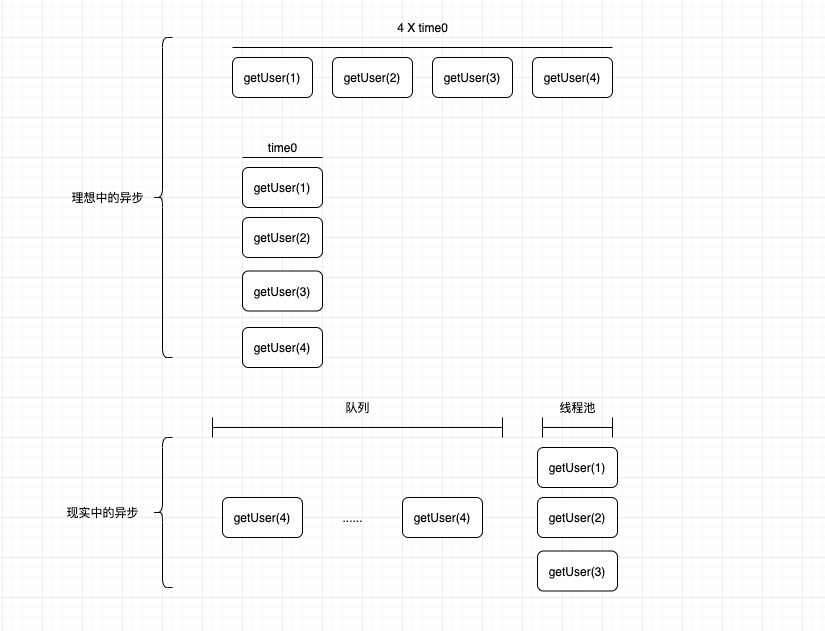

对于项目压测过程中的问题和思考总结做一个简单的记录。
压测问题与思考
问题：
- 代码问题：for循环中加载数据
- SpringBoot没有足够的了解
- 线程池配置
- 缓存（雪崩）问题
- 服务治理问题
思考总结🤔 ：
- 强大的监控系统能够提高压测效率。
- SpringBoot自动配置足够强大和傻瓜化，但是我们需要对于引入了什么组件以及做了什么配置有充分的了解（防止出现问题）。
- for循环加载数据的两个优化方向：
异步化和批量加载 - 线程池很常见，要明白系统中哪里用到了线程池以及这个地方的线程池配置是否合理。
- 服务治理问题很重要，依赖其他服务的接口可能会让你的服务崩溃。
环境
- k8s
- istio
- jaeger
- MySQL
- Redis（Cluster）
- ES
服务
涉及到两个服务A和B，服务A为本次压测目标，服务A弱依赖与服务B.
下面是测试过程中出现的问题
nginx超时问题
之前压测时，压测机器和服务都是在K8s环境内部调用，没有暴露出这个问题。这次压测，测试选择Windows机器调用服务域名，但是因为出现ng超时,导致后续一段时间内持续报错。
解决方案：
通过nodeport类型的service暴露出端口，供压测使用。
这个问题还是性能问题，选择直接优化代码或者调大超时时间都是可选项。我们不想打断一轮压测，选择了当前的解决方案
循环内部加载数据
代码内部有存在循环内部加载数据的逻辑，伪代码如下
public List loadUsers(List ids) {
List userList = new ArrayList<>();
for (String id : ids) {
User user = getByCache(id);
if (user != null) {
user = getByDb(id);
}
if (user != null) {
userList.add(user);
}
}
return toDtoList(userList);
} 第一步考虑优化的方案是异步化
public List loadUsers(List ids) {
List userList = new ArrayList<>();
List> futures = new ArrayList<>();
for (String id : ids) {
futures.add(ayncGetUser(id));
}
for (Future future : futures) {
try {
userList.add(future.get());
} catch (Exception ex) {
todo xxx
}
}
return toDtoList(userList);
} 压测结果显示效果不理想。
我的想法是：异步化能够提高一定的吞吐量，但是在高负载的情况下，大量的任务在队列中等待执行，导致了压测结果的不理想。

在当前场景下异步化的作用并不大
第二步考虑优化的方案是批量获取
Redis Cluster模式下mget命令是无法直接获取到所有的key(如果分布到不同的机器上)对应的内容的，但是客户端做了一些优化，帮助我们使用这个命令。
Jedis Client
//JedisClusterStringCommands
@Override
public List mGet(byte[]... keys) {
Assert.notNull(keys, "Keys must not be null!");
Assert.noNullElements(keys, "Keys must not contain null elements!");
//如果所有的key在同一个slot内，一个connection可以直接执行
if (ClusterSlotHashUtil.isSameSlotForAllKeys(keys)) {
return connection.getCluster().mget(keys);
}
//否则需要多个connection执行
return connection.getClusterCommandExecutor()
//对应代码在下面
.executeMultiKeyCommand((JedisMultiKeyClusterCommandCallback) BinaryJedis::get, Arrays.asList(keys))
.resultsAsListSortBy(keys);
}
public MultiNodeResult executeMultiKeyCommand(MultiKeyClusterCommandCallback cmd, Iterable keys) {
//keys分布的节点
Map nodeKeyMap = new HashMap<>();
int index = 0;
for (byte[] key : keys) {
//每个key对应的节点
for (RedisClusterNode node : getClusterTopology().getKeyServingNodes(key)) {
nodeKeyMap.computeIfAbsent(node, val -> PositionalKeys.empty()).append(PositionalKey.of(key, index++));
}
}
Map>> futures = new LinkedHashMap<>();
for (Entry entry : nodeKeyMap.entrySet()) {
if (entry.getKey().isMaster()) {
for (PositionalKey key : entry.getValue()) {
//加载到执行线程池内去执行
futures.put(new NodeExecution(entry.getKey(), key), executor.submit(() -> executeMultiKeyCommandOnSingleNode(cmd, entry.getKey(), key.getBytes())));
}
}
}
return collectResults(futures);
} lettuce client
@Override
public RedisFuture>> mget(Iterable keys) {
//计算keys分布的slot
Map> partitioned = SlotHash.partition(codec, keys);
//如果全部分布在同一个slot上
if (partitioned.size() < 2) {
return super.mget(keys);
}
Map slots = SlotHash.getSlots(partitioned);
Map>>> executions = new HashMap<>();
for (Map.Entry> entry : partitioned.entrySet()) {
RedisFuture>> mget = super.mget(entry.getValue());
//每一个slot 对应的mget
executions.put(entry.getKey(), mget);
}
// restore order of key
return new PipelinedRedisFuture<>(executions, objectPipelinedRedisFuture -> {
List> result = new ArrayList<>();
for (K opKey : keys) {
int slot = slots.get(opKey);
int position = partitioned.get(slot).indexOf(opKey);
RedisFuture>> listRedisFuture = executions.get(slot);
result.add(MultiNodeExecution.execute(() -> listRedisFuture.get().get(position)));
}
return result;
});
} 我们需要做的事就是两件事了：
- 缓存的key放在同一个槽内
Redis支持设置HashTag来保证分布在相同的slot内，比如下面的key:pre_{key:1}_user_1,pre_{key:1}_user_2,pre_{key:1}_user_3 - db操作批量获取
我们的接口都是按照租户ID来获取信息，所以Redis可以通过设置一个租户id来保证一次网络请求批量获取key。
Redis客户端
Redis的客户端主要是Jedis和lettuce,两者在连接上有很大的区别，
jedis的连接不是线程安全的每个操作需要独享一个连接
lettuce的连接时线程安全的所有命令可以共用一个连接，更推荐使用连接池
基于我本次压测的观察：
配置了连接池的lettuce在压测表现上远优与Jedis
监控系统对于压测效率的提升
刚开始压测的情况下环境内是没有Jeager的，所以发现问题是很困难的，需要对于每一个请求手动打埋点日志，整体过程让人焦虑而且效率低下。
后来部署了Jaeger之后，很容易发现链路中的问题，下图是一个链路的示意图（包含DB、Redis和请求操作）

很轻松发现服务中的问题。
连接池问题
- Tomcat连接池
- Db连接池
- redis连接池
Tomcat连接池使用了SpringBoot自带的配置，不是服务的压测瓶颈
Redis连接池在比较了Jedis和lettuce之后，选择了lettuce
Db连接池使用的是Druid
服务治理问题
公司的规划是使用istio来做服务间接口的限流和熔断，但是这部分功能还没有落地，应用内部目前也没有做这些功能。
就像上面的Trace一样，虽然做了降级（调用失败会走MQ）,但是A服务还是被B服务拖垮。
缓存问题
压测环境配置的缓存过期时间比较短，会出现所有缓存都失效的情况，这时所有的请求都打到DB上，服务整体性能严重下降，而且DB的CPU偏高。
新版本上线可能会出现这种问题，这个还是需要DevOPS一起找出一个解决方案。
今天就到这吧